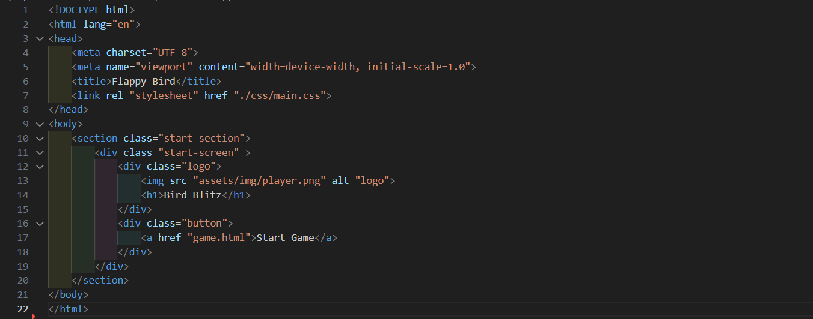
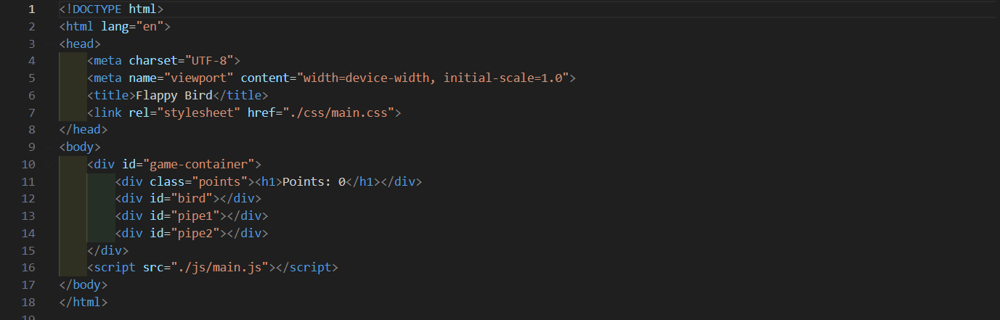
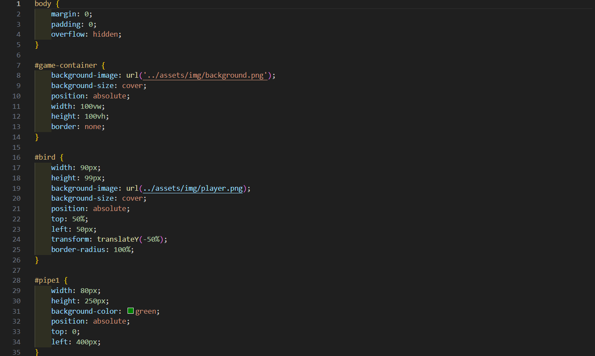
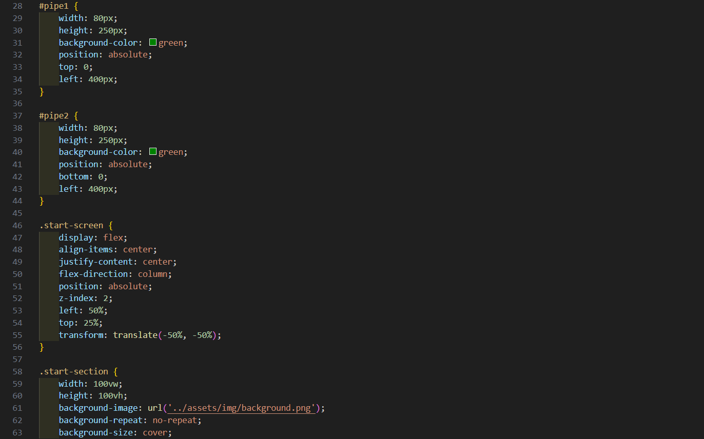
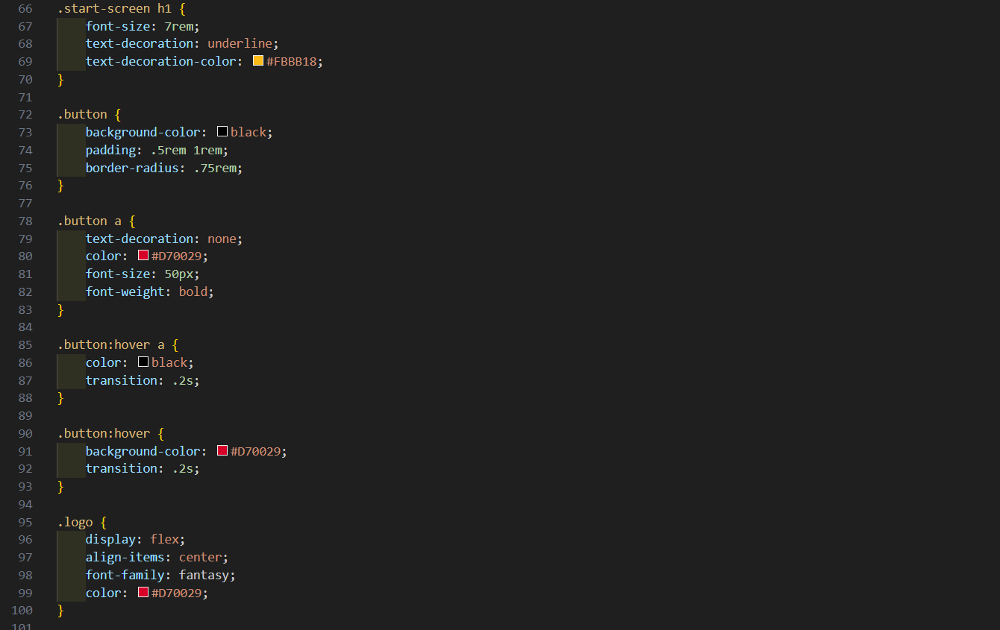
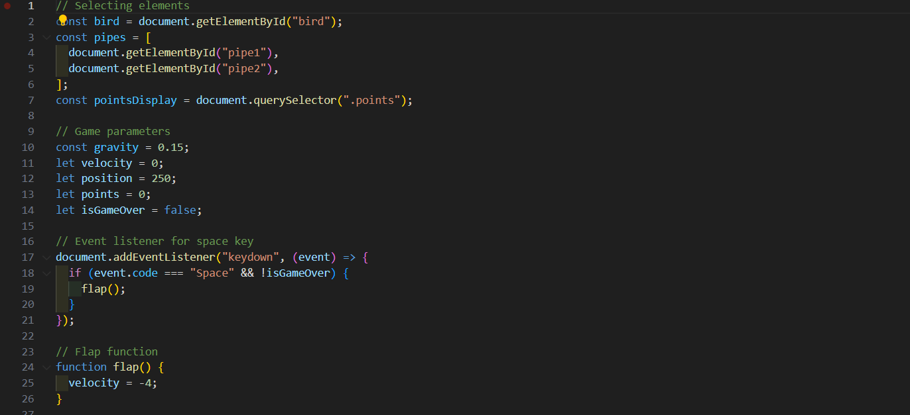
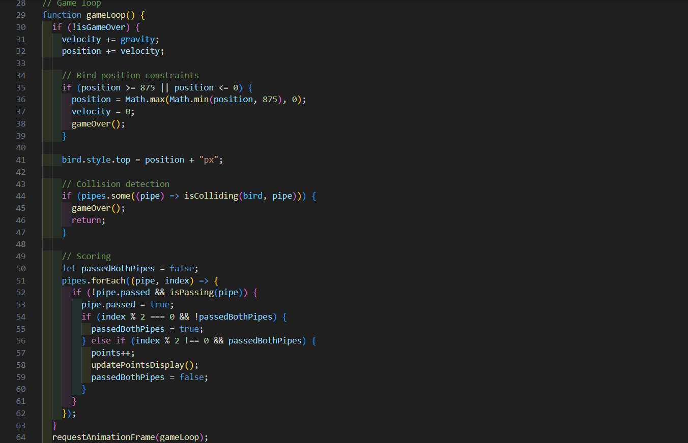
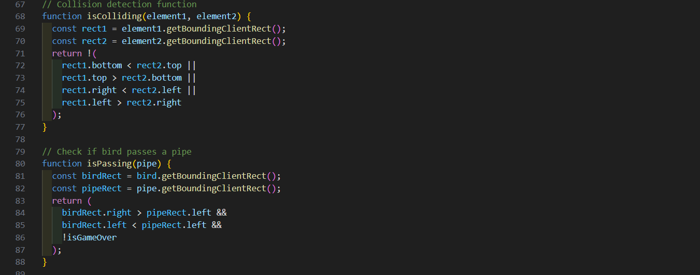
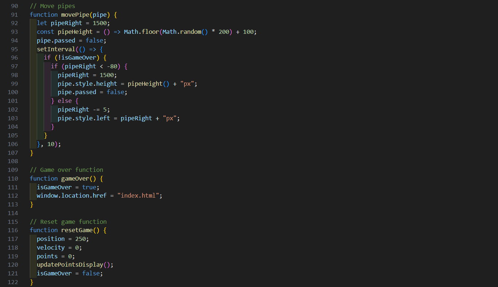
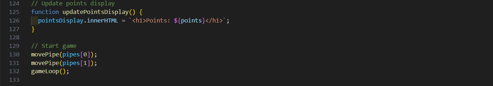

Bird Blitz Tutorial
We gaan een mini game maken genaamd 'Flappy Birth'!
In dit spel sturen we een vliegende emoji door obstakels heen terwijl we punten verzamelen. Gebruik de spatiebalk om de emoji te laten vliegen en probeer zo lang mogelijk in de lucht te blijven. Klaar om de uitdaging aan te gaan en de geboorte van een nieuw record te vieren?

Daarvoor hebben we drie codetalen nodig
- HTML
- CSS
- JavaScript
-
STAP 1 - MAPPENSTRUCTUUR
Maak een folder aan.
Open het programma Visual Studio Code en open de folder die je zopas aangemaakt hebt.
Je maakt een folder aan met de naam "app". Vervolgens maak je een index.html en game.html bestand aan in de root, oftewel de app folder. Ten slotte mag er een assets map met daarin een img mapje worden gemaakt, waar we de achtergrond en de player sprite zullen bewaren, een css map met daarin het bestand main.css, en een js mapje met het bestand main.js in de root (app folder).

-
STAP 2 - HTML
je opent het index.html bestand en plaatst de volgende code
 -
je opent het game.html bestand en plaatst de volgende code
 -
STAP 2 - CSS
je opent het main.css bestand en plaatst de volgende code




-
STAP 5 - JavaScript
je opent main.js en plaats de volgende code





-
STAP 6 - INTERACTIVITEIT MET JAVASCRIPT
Link de JavaScript-bestand met het HTML-bestand.
-
STAP 7 - BACKGROUND
en dan plaats je een background.png en player.png in de img folder